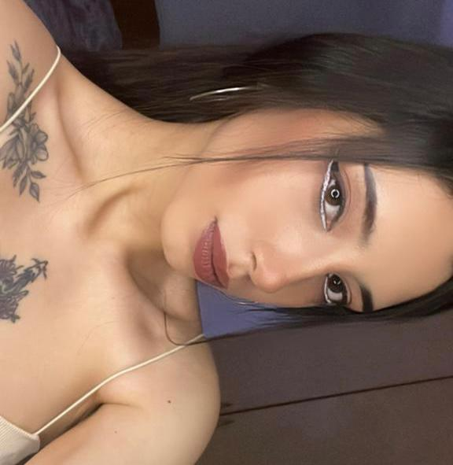
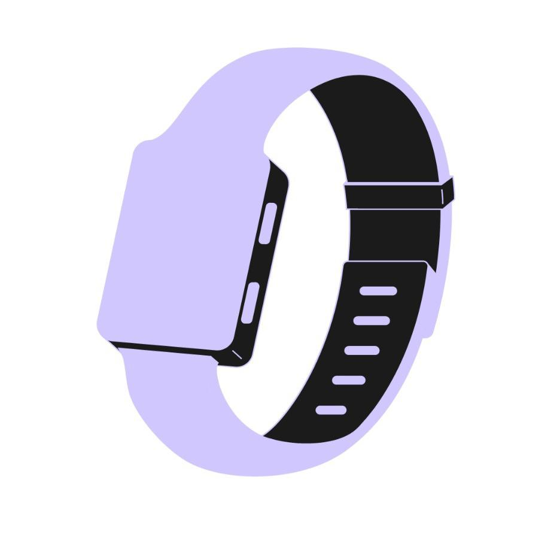
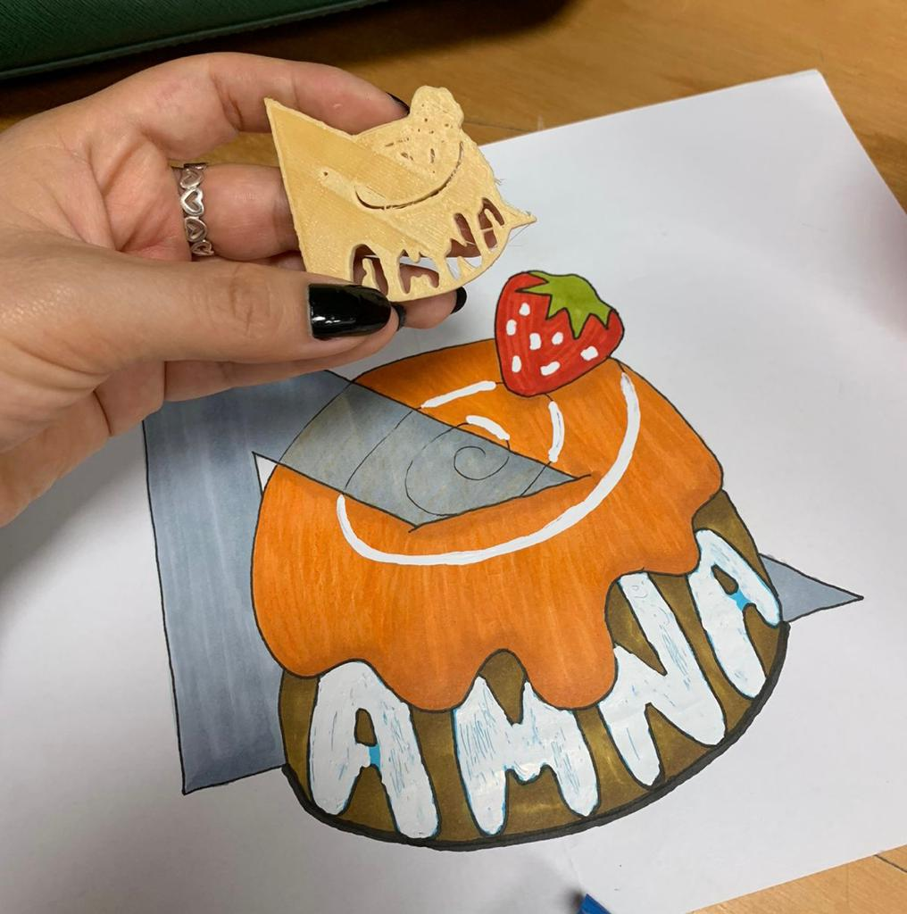

FERNANDA VIDAL
 |
SOBRE MI Mi nombre es María Fernanda Vidal, prefiero que me digan solo Fernanda o Fer, estudio arquitectura de interiores me gusta ver series HBO y Netflix en mis tiempos libres también salir con mis amigas a comer y a la playa. Espero terminar mi carrera con éxito y poder ir a estudiar un postgrado o completar ya la carrera de arquitectura en otro país como Estados Unidos o Canadá y trabajar allá. |
 |
PROPUESTA DE PROYECTO La propuesta que quisiera realizar este ciclo para el curso sería la pulsera con sensor de rayos UV que realice con mi primer grupo ya que, creo que es algo que entra dentro de nuestras posibilidades y va en nuestro contexto actual debido al fenómeno del niño. Además, de que tiene características y particularidades únicas que siempre puede ayudar a otras personas a concientizar sobre este constante problema de la sobreexposición al sol en nuestro país. |
 |
MISIÓN 1 El dibujo que realizamos con mis compañeras y amigas es un rollo de canela que simboliza nuestra amistad que es un lazo fuerte como este que se enrolla de esa manera asimismo somos generosas y solidarias entre nosotras como el postre. La fresa porque a veces nos enojamos y es esa acidez que nos representa, pero siempre nos arreglamos. La escuadra porque las 4 somos de la carrera de arquitectura y nos corta a la mitad porque a veces sentimos que nos consume mucho, sin embargo, nos encanta. Finalmente, las letras por nuestras iniciales, hacer el dibujo fue divertido y logramos conocernos muchos más, la impresión 3d no salió tan bien porque era muy complicado, pero ya sabemos para la próxima como se realiza ya que esta fue nuestra primera vez. |
CONTACTO | Número: 921 319 011/Correo: mfrvidal533@gmail.com |